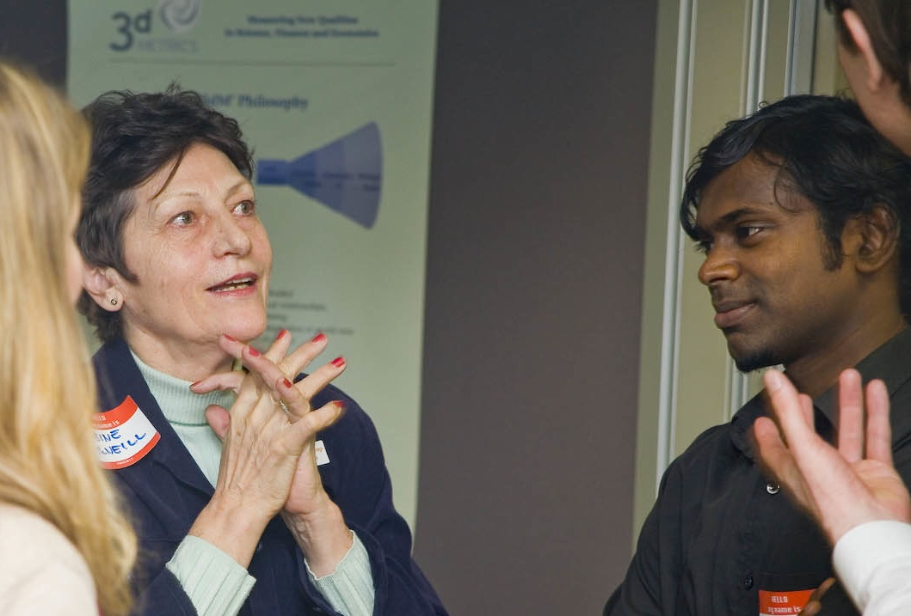
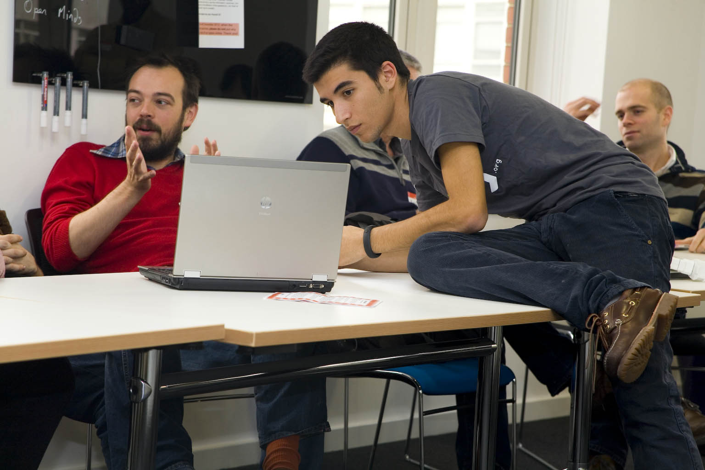
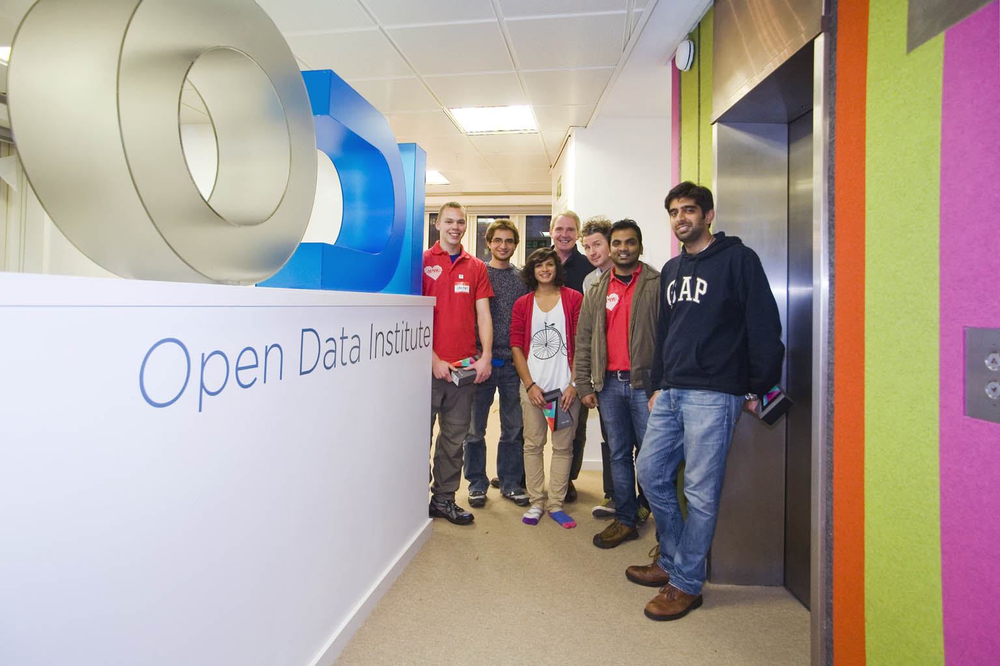

A healthy start for Hackathons at the ODI
New fitness apps and projects that find savings in NHS prescription data were amongst the winners at the Hack4Health event this weekend.
More than 40 health and fitness professionals, academics and developers came together at The Open Data Institute to work with new datasets including ones provided by The Care Quality Commission, NHS Choices, Spogo and Data.gov.uk.
Friday evening event
The hackathon was jointly organised by The ODI, Coadec, Healthbox, NHS Information Centre, Cabinet Office, the Open Knowledge Foundation and NHS Hackday. It kicked off on Friday night with an event, introduced by The ODI’s co-founder and chair, Professor Nigel Shadbolt, and its CEO, Gavin Starks who said:
"These events for me are the invention-level events. Where everybody gets together and says ‘we don’t know what will happen but let’s see when we put all these different domain experts together and these different capabilities, what might we build?
We [The ODI] will work hard to facilitate and enable ideas to grow and then connect them to industry or back in to government as much as we possibly can"  Sabine McNeill shows her 3D imaging product to attendees Attendees drew inspiration from 3 companies that are already using health data to create products that can really make a difference to peoples’ lives: Medopad, Care^9, and 3D Metrics.
They were also able to meet and mingle with mentors who were on hand throughout the weekend to give guidance, hints and tips. They included investors, Alasdair McPherson and Vishal Gulati and business specialist, Anne McCrossan
Night shift
Over the weekend, participants submitted ideas, voted on their favourites and joined teams to bring the ideas to life. For some, this meant working through the night in The ODI’s Shoreditch HQ, fuelled by endless rounds of tea, coffee and cola!
24 hours’ intensive development work were followed by 5 presentations to the judging panel which comprised: ODI chair, Nigel Shadbolt; doctor and best-selling author of Bad Science, and Bad Pharma, Ben Goldacre and; doctor and co-founder of Open Health Care UK, Carl Reynolds.
Prizes
Winners were named in 4 categories:
- Best Team Effort was won by Vital Choices, a project which enables people to find healthcare services in their local area. The team included Anne McCrossan, Samuel Croset, Emily McKenzie, and Prathap Chandran.
- Best Live Hack Project went to Open Push-ups, an application that allows people to track their fitness goals, and compete against their friends. The team included Thomas Down, Matias Piipari, and Nicola Greco.
- **Best Use of Open Data Project **(two winners):One comprised Southampton University academics, Max Van Kleek and Daniel Smith, and the other included David Miller, Alex Kaftez, Allen Lin, Felix Greaves, Felix Kruger, and Ben McAlister. Both teams produced new and interesting analyses of NHS prescription data.
- The Overall Winner was Go-Hit-It-Off. A team including Farzana Dudhwala,Ian Rodgers, Aashish Doon, and Prashant Khare produced an app using Spogo fitness data that enables racquet-sport players to find available venues and match partners at the tap of a button.

The winners, Go-Hit-it-Off
Announcing them as winners, Nigel Shadbolt commented that this was “a gem of a dataset and a project really meeting a need”.
The team won prizes including desk space at The ODI and a chance to present their project at the launch of the Institute in December where UK Government Ministers will be present.
Healthcare value in open data
Commenting on the winners, Ben Goldacre said they show that open data is of particular relevance to the health and fitness sector:
“Healthcare should always be of the best possible quality, because lives are at stake. Elegant and imaginative uses of data can make sure that decisions by professionals are transparent, accountable, and driven by evidence, as demonstrated by the work done on prescribing data this weekend. But the same kind of work can also ensure that healthy decisions are easy, as the tennis matchmaker shows”. Nigel Shadbolt added:
“The great thing about a hack day is that it brings together innovators, developers and people with great ideas to focus on the data itself. The other thing it brings is a sense of common purpose – there’s a lot of networking between the various ideas. That happens when you bring people in to close proximity together over 2 or 3 days. Great ideas are born” The winning team, Go-Hit-It-Off will be guest blogging on this site soon and if you would like to take part in the next ODI hackathon see ODI Events
Photos: Brendan Lea